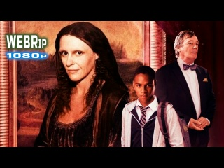
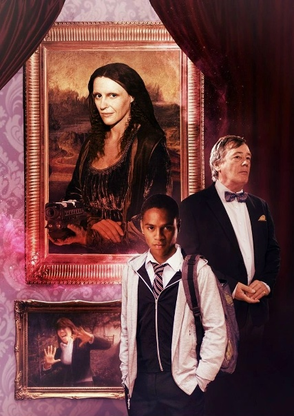

Mona Lisa's Revenge
Дата выхода: 12-13 ноября 2009
Формат: 2 эпизода по 30 мин.
| Варианты озвучек: | * Разные: смотрите по инструкции |
|---|---|
| Скачивание и просмотр: |
Таинственная сила оживляет картину «Мона Лиза», которая находится в Лондоне на выставке Международной галереи. Люк, Клайд и Рани находятся на экскурсии в музее, где они замечают как Мона Лиза вышла из своего холста и угрожает людям сонтаранской пушкой. Сара Джейн прибывает на помощь, однако оказывается заперта в картине. Спасти её могут лишь ребята, пока Мона Лиза ищет своего «брата», спрятанную ужасающую картину известную как «Мерзость».
